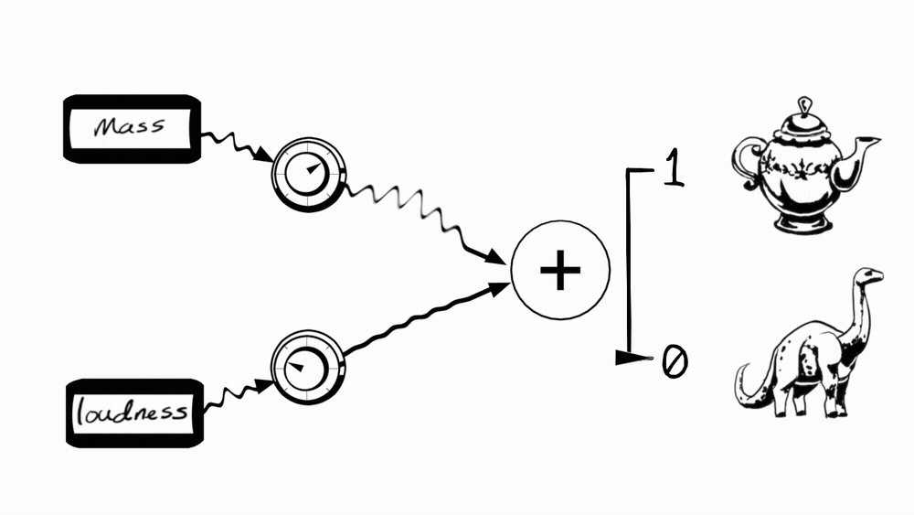
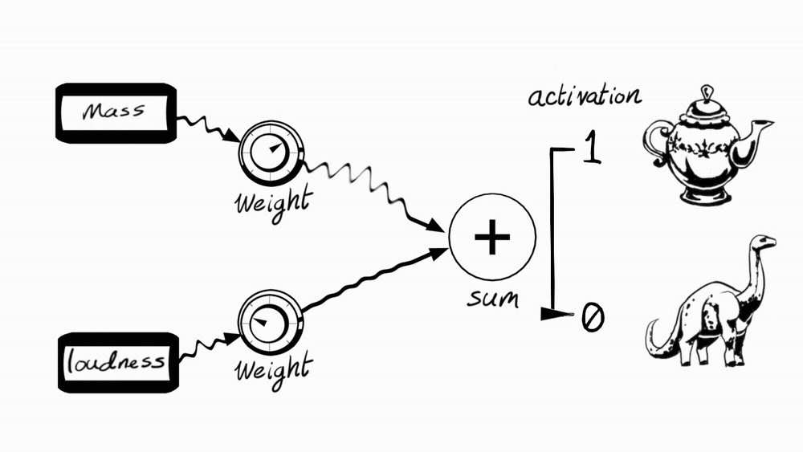
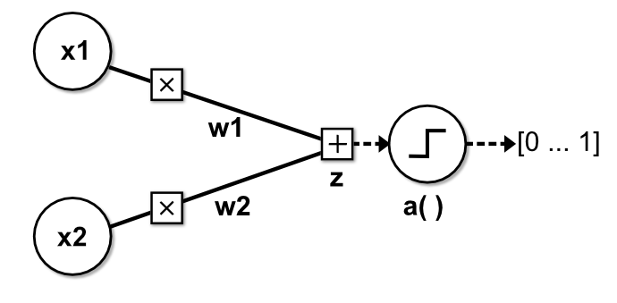
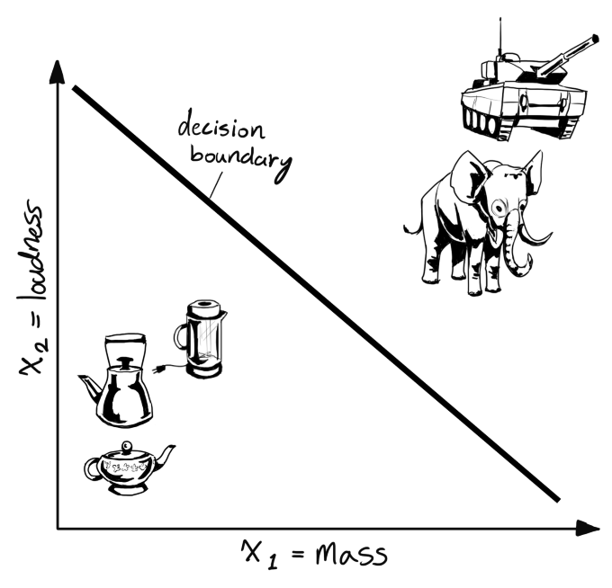
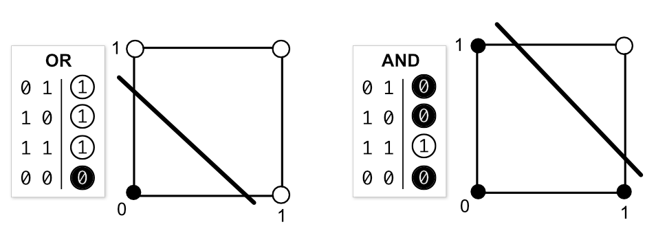
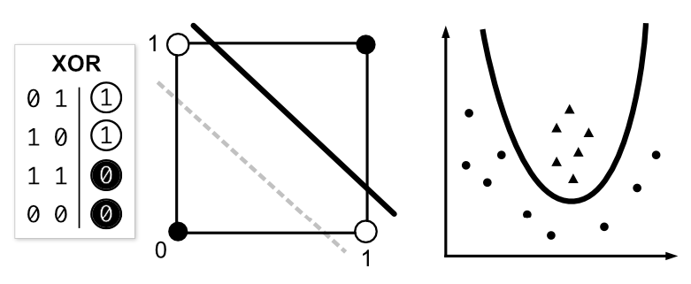
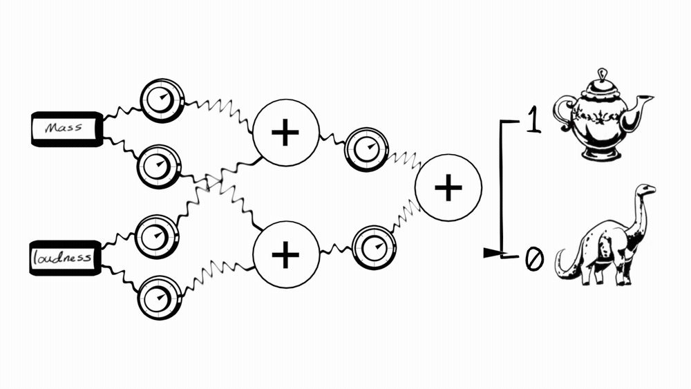

Percy the Perceptron
Knowledge prerequisites: algebra fundamentals, logic gates
Outcome: Understand what a perceptron is and how it works
This is Percy. Percy receives information about an object and then makes a prediction:
- If he thinks the object is a teapot, he says 1.
- If he thinks object is an apatasaurus, he says 0.
I have this object, and I'm not sure if it's a teapot or an apatasaurus. It's slightly heavy and it makes a loud noise. Here are the measurements of the object:
- mass = 2 kg
- loudness = 65 dB
I'll give these measurements, or inputs, to Percy.
Percy makes a prediction
Percy weighs the significance of each input to filter out unimportant information. Then he combines them to form a prediction.
I've labeled each part of Percy and described their role in his prediction process:
- The weights modulate the strength of each input connection. Small weight values throttle a connection, and large weight values amplify it.
- The weighted inputs are combined into a sum.
- If the sum is strong enough, the activation outputs 1, otherwise it outputs 0.
Percy says 1. That means he thinks the object is a teapot. I think he's correct.
What is Percy?
Percy is a type of artificial neuron called a perceptron, invented by Frank Rosenblatt in 1957.
An artifical neuron is a mathematical model inspired by the functions of a biological neuron. It receives any number of inputs, combines them into a sum, and then outputs a single prediction.
You may question the application of an invention whose legacy is outputting a 0 or a 1 based on sparse information. Surely, us humans are much more logically equipped to distinguish objects.
But much like Percy, our brains also receive inputs (more than two) and combine them to form blurry generalizations about everything:
"...The brain is combining lots of sources of unreliable evidence, and so logic isn't such a good paradigm of what the brain's up to." (Hinton)
Percy but with math
Now I'll delve into a more detailed explanation of how the perceptron works.
Here's a mathematical dissection of Percy (it's fine, he doesn't feel pain). Each part is denoted by a variable name:
x1: mass inputx2: loudness inputw1: weight of the mass inputw2: weight of the loudness inputz: sum of the weighted inputsa(): activation function
I'll reduce this down to an equation:
z = x1w1 + x2w2
prediction = a(z)
Observe again as Percy makes the same prediction he made in the last section. This time, we can see the values of his weights:
w1= 0.5w2= 0.2
Considering these weight values, which input (mass or loudness) does Percy favor more?
Given x1 = 2 kg, and x2 = 65 dB:
z = 2 × 0.5 + 65 × 0.2
z = 1 + 13
z = 14
The sum of the weighted inputs, z = 14, doesn't mean much when
classifying something.
A value between [-∞, ∞] is not very concise.
The activation function, a(), restricts the size of
z by squashing it between two consistent values, like [0, 1] or [-1, 1].
Percy is restricted to 0 or 1, so his activation is the Heaviside step function:
If z > 0, output 1
Else if z ≤ 0, output 0
z = 14 is more than 0. So, a(z) is
1, or a teapot prediction:
Evidently, Percy has an inclination towards teapots. All of his inputs are positive,
resulting in an output of 1.
But he can adjust his weights to tug z into
the negative range:
We can see here that emphasizing certain inputs over others can significantly alter a prediction.
Percy's bias makes him more objective
Weighting the inputs moves z around. But what about
a supplemental parameter that moves the activation?
I'll give Percy a new input: a constant input of 1 with its own weight, b:

This new parameter, b, is the bias. It's added to the weighted inputs:
prediction = a( x1w1 + x2w2 + b)
Now when Percy adjusts b, his activation
shifts away from 0 and changes his sensitivity towards outputting 0 or 1:
A large bias makes him leap to the teapot prediction. A small bias makes him linger in the apatasaurus prediction until he's surmounted by evidence of the contrary.
You will see in the next section why this extra bit of precision is important.
Percy makes multiple predictions
Percy doesn't configure his weights to classify one object, but to classify many objects at the same time. He generalizes to make new predictions.
Here's a set of objects plotted onto a graph, where x1 is the x-axis and x2 is the y-axis:
Percy's predictive model, a( x1w1 + x2w2 + b), can be plotted
as a line that separates teapots and apatasauruses.
I'll rewrite it in y = mx + b form (ignoring the activation for now),
where x1 = x and x2 = y:
w1x + w2y + b = 0
w2y = -w1x - b
y = -(w1/w2)x - b/w2
And here it is plotted:
This line is the decision boundary. Data on one side are teapots, and data on the other side are apatasauruses. Roughly speaking.
Percy's generalizations emerge from:
- How his decision boundary fits the data, based on the configuration of his weights and bias
- The data he's given
Percy is responsible for fitting his decision boundary. Us humans are responsible for giving him the correct data.
How does Percy know how to set his weights and bias? He learns through training, but that's a topic for another article.
Percy's limitation
You may be suprised to know that Percy has limited applications. He can only solve linearly separable problems. That is, data that can be easily separated into two distinct catagories with a straight line.
The AND and OR logic problems are linearly separable:
But despite his presistence, Percy can't solve non-linear problems. This includes the XOR problem, or datasets that requires curved decision boundaries:
Along with previous generations of artifical neurons, Percy inherited the family heirloom of disappointment. The perceptron's limitations compelled researchers in the 1960s to abandon artificial neurons until the 1980s.
However, we now know that if we stack lots of artifical neurons into connected layers, we create a neural network.
Hundreds of fluctuating weights mixing predictions with other predictions can solve non-linear problems and recognize elaborate patterns beyond whether or not something is a teapot or an apatasaurus.
Turns out more than one useless thing can be useful.
Summary
- Percy is a type of artifical neuron called a perceptron.
- An artificial neuron receives any number of inputs, combines them into a sum, and then outputs a single prediction.
- The weights of an artifical neuron modulate the importance of its inputs by amplifying or throttling their connections.
- The bias is an input of 1 with its own weight. It nudges the activation left or right to change Percy's sensitivity towards outputting either 0 or 1.
- The activation squashes the weighted inputs between two numbers, such as 1 or 0.
- Percy's weights, bias, and inputs form a decision boundary that separates teapots and apatasauruses.
- Percy can only solve linearly separable problems, but not non-linear problems.
- Artificial neurons can be stacked into interconnected layers to form a neural network that can solve non-linear problems.
- A teapot is a culinary instrument used for holding boiled water and pouring it. An apatasaurus is not.
Sources
Hinton, G. 2013. Lecture 1c Some simple models of neurons https://www.youtube.com/watch?v=VA9niXgGOsQ&list=PLLssT5z_DsK_gyrQ_biidwvPYCRNGI3iv&index=3&t=119s
Nielsen, M. (2019, Dec). Neural Networks and Deep Learning. Retrieved November 20, 2020, from http://neuralnetworksanddeeplearning.com/chap1.html
Patterson, J., & Gibson, A. (2017). Deep learning: A practitioner's approach. Beijing: O'Reilly Media.
Paul, M. (2018). Boundaries, hyperplanes, and slopes. University of Colorado Boulder. doi:cmci.colorado.edu/classes/INFO-4604/files/notes_svm